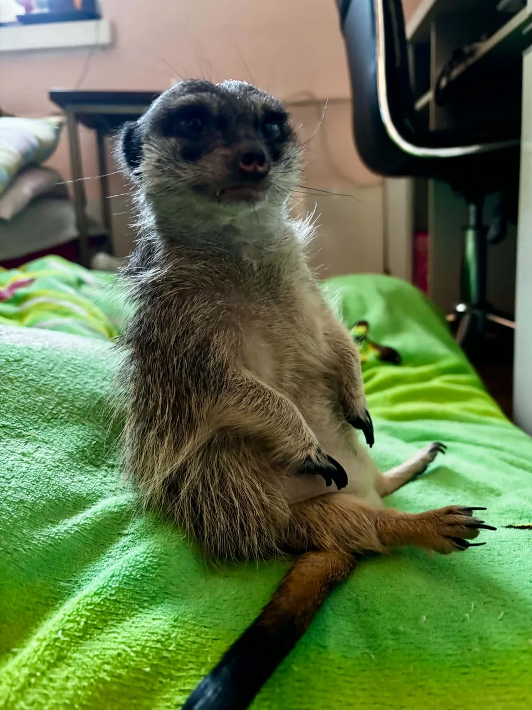

NOWY WPISTofik — prezes zarządu i kierownik ochrony
Kontroluje torby, słyszy gołębie szybciej niż wszyscy i prowadzi własny dział remontów poduszek. Osobisty felieton o życiu z małym, bardzo czujnym lokatorem.
- domowy patrol i czujność surykatki
- kopanie, poduszki i doniczki bez retuszu
- więź z rodziną bez antropomorfizacji
- film i zdjęcia z archiwum domowego